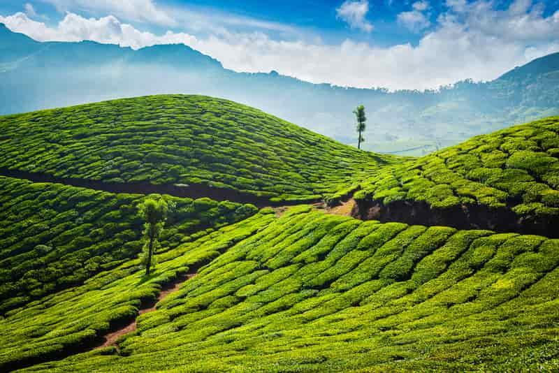
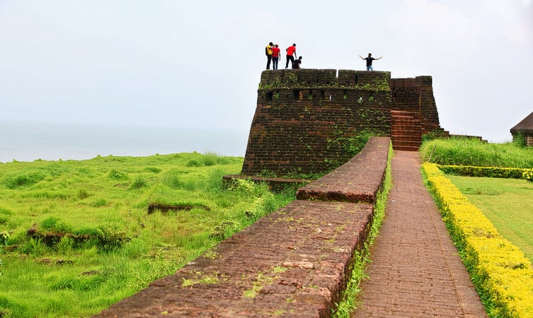

Must Visit places
Lush green tea plantations, serene winding backwaters and spice plantations are a few features that define Kerala as one of the most popular tourist destinations in India. Popular as ‘God’s Own Country’ Kerala is a haven for travellers who come here to unwind in the salubrious climes, away from the concrete jungle.
Now let us explore some of the interesting places that must not be missed while visiting kerala....
Alleppey or Alappuzha is best known for the world renowned backwaters of Kerala. The backwaters are a network of brackish canals, rivers and lakes that weave through half of the state of Kerala. One can cruise down the backwaters while enjoying the unique feel of the “Kettuvallams” or house boats which provide amenities including a taste of typical Kerala cuisine. For other curious travellers, there are several unique temples and churches which add more value to the picturesque beauty of Alleppey.
How to get there: The Cochin International Airport, located at a distance of 75 kilometres is the nearest airport to Alleppey. The airport is well connected to major cities in India as well as abroad. Munnar is considered one of the most beautiful tourist places in Kerala. Situated on the Western Ghats, Munnar is evidently one of the highest producers of tea on the Indian subcontinent. The view of undulating hills as the touch the clouds in Munnar rejuvenates your mind and soul. The town is flanked by a narrow patch of the Arabian Sea and The Western Ghats on the other side which makes Munnar a unique getaway from the city life. Palm-fringed backwaters, scenic waterfalls, sunny beaches, misty mountains and gushing streams, Munnar has it all!
How to get there: The nearest airport is the Cochin International Airport, which is 110 kilometres away by road. From Cochin, you can hire a cab to get to Munnar. There are state-run or private buses, plying from various towns in Kerala and Tamil Nadu which are the best way to get to Munnar by road. Where to stay: Misty mountain resorts, Munnar Terrace Greens and Fort Munnar provide rooms at 3000-5000 INR/Per night*. Blossom Park Dark Forest is a magnificent park located at a fair distance of three kilometers from the town of Munnar. It is situated nearby the Pallivasal Hydro-electric project, near the beautiful river Muthirappuzha and in the middle of the Kanan Devan Hill Tea Estates. The beauty of this park is further enhanced by a large variety of blossoming flowers. The park has visitors from all over the world. The best part about this park is that they have planted seasonal flowers as well.
Blossom Park is one of the most vibrant places to visit in Kerala, due to its naturally blooming flowers and lush greenery. The park is also an ideal spot for photography and activities like cycling, boating, trekking, bird-watching and more. They also arrange a fascinating flower show every year.
Eravikulam National Park isn’t just a tourist place in Kerala; it is also home to a number of endangered and vulnerable species in the world. The national park is about natural beauty and riveting landscapes that offer one the ultimate opportunity to rendezvous with the wild.
With its natural landscapes and the backdrop of hills, this stunning national park is certainly one of the best places to visit in Kerala. Located in Idukki, the Valara Waterfalls is one of the most mesmerizing places to visit in Kerala. The waterfall is located amidst Adimali and Neriamangalam. The magical and fantastic beauty of this waterfall is enough to make anyone fall in love with it.
Valara owns a chain of waterfalls, neighboured by lush green forests, and it holds a large variety of animals and birds. The beauty of this scenic and gushing waterfall is a treat to behold. It’s the best way to escape the day-to-day tiresome city life. Valara Waterfalls is also an ideal location for nature photography and picnics. For nature lovers, it is a heaven’s gift.
The traditional architectural style of Kerala is vividly portrayed even in the nook and corners of this palace. Gabled roof, narrow corridors, and dormer windows of the palace still possess pride. Now it is taken care of by the Archaeological Department of Kerala. It has a large pond as well inside which adds more beauty to the palace.
The walls of the palace are made quite attractive with the mural paintings named Gajendra Moksham, Kerala style paintings, and other paintings which are popular. Krishnaswamy temple in the vicinity is the main reason the palace got the current name. Encircled by terraced gardens with fountains are another highlight of this palace on a small hillock.
The Triveni Floating Market is an economic market located in Alleppey. Visiting this flea market is an experience in its own. It is one of the most economical market places to visit in Kerala. The best thing about this market is that it’s a floating market. Owned and run by the state cooperative, this floating market is renowned for the red and white chequered boats.
You can get everything you need here; from shampoos and health drinks to televisions and music systems. Valiyathura Pier is somewhere else which is an unquestionable requirement visit destination in Kerela. This 214-meter long Pieris situated at the old port of Valiyathura, an unwinding shoreline at Kovalam.
This dock was utilized by the angler amid the high tide and is currently a well-known spot for calculating and photography. Upheld by 127 solid heaps, the dock had four 3-ton cranes and one 10-tonner to empty load from the boats. Since the wharf was situated in shallow waters, substantial boats needed to grapple in the remote ocean and transport their product in little vessels. Fondly known as the ‘The Niagara of India,’ Athirappilly Falls is certainly the best waterfalls in the country. Located at the Chalakudy River, this waterfall has a total height of 82 feet and is located at the segmented type at an elevation of 390 feet.
The river just below the falls remains turbulent and resumes its calmness after a kilometer. The falls are also known for flowing towards the Arabian Sea and its environs are known for being home to a number of animals and plants, including endangered species.
Apart from the scenic beauty of this waterfall, the place is known for its wildlife, including animals such as Asiatic elephant, Sambar deer, leopard, bison and lion-tailed macaque. The forests here serve as a nestling bastion for Malabar Pied and Grey Hornbill along with the Great Hornbill. Teak, Bamboo and Eucalyptus are some of the trees that are widely found here.
1 . Alleppey

2. Munnar

3 . Bekal

A small town located in Kasaragod district of Kerala, Bekal is one of the most beautiful places to visit in Kerala. Bekal is all about pristine beaches, backwaters, and historical forts. The town shares its borders with the shores of the Arabian Sea. This small town is blessed with various tourist attractions to explore, and it’s famous for its natural beauty. Spending some time in Bekal and exploring its temples and mosques is the best way to escape the hustle-bustle of daily life.
There is a set of 45 caves located in Bekal, known as the Nityananda Ashram caves which are worth visiting at least once in a lifetime. A few other tourist attractions in Bekal are The Aqua Park, Bekal Fort, Bekal Beach, Kappil Beach, Chandragiri Fort, Valiyaparamba Backwaters, Ananthapura Temple, Nileswaram, Hosdurg Beach, and Malik Deena Mosque.
4. Blossom Park Dark Forest
5. Eravikulam National Park

6 . Valara Waterfalls
6 . Krishnapuram Palace
7 . Triveni Floating Market
8 . Vembanad Lake
The pulse of Kerala can be felt at the Vembanad lake, which is a confluence of ten rivers. The largest Lake in Kerala also the pride of the state is a labyrinth of several groups of small islands, lagoons, canals, and estuaries presenting an overwhelming display of nature’s glory.
Being a tourist hot spot exclusively for backwaters, one may find over five hundred Kettuvallams, traditional houseboats either plying or anchored to the banks. The Kumarakom Bird sanctuary is on the banks of Vembanad, showcasing hundreds of migratory and local birds in their flamboyance.
9 . Valiyathura pier
10 . Athirapally Waterfalls